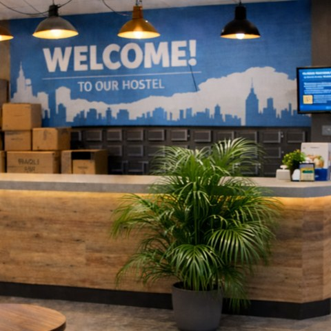

Warum Set-Design mehr ist als „Ordnung im Hintergrund“ – und wie kleine Details Vertrauen schaffen

Es gibt Dinge in der Videoproduktion, über die kaum jemand spricht, obwohl sie für die Wirkung eines Clips enorm entscheidend sind. Set-Design gehört definitiv dazu.
Viele denken beim Wort „Set-Design“ an große Filmsets, stylische Möbel, Pressetermine oder Instagram-ready Backgrounds. Aber darum geht es nicht.
Es geht um etwas viel Simpleres: darum, was im Bild ist – und was nicht. Darum, ob ein Video unbewusst Vertrauen aufbaut oder unbewusst Zweifel weckt.
In den letzten Monaten habe ich extrem viele Social-Media-Videos gesehen, und bei erstaunlich vielen davon hatte ich den Eindruck, dass der Hintergrund entweder zufällig gewählt wurde oder niemand überhaupt darüber nachgedacht hat. Und das ist ein Problem — eines, das viele Firmen noch gar nicht erkannt haben.
Warum mich dieses Thema gerade jetzt so beschäftigt
Es gab nicht „den einen Auslöser“, sondern eine ganze Welle von Eindrücken, die sich aufgestaut haben. Viel Content, der technisch okay, aber inhaltlich unklar war. Viele Clips, die nett gemeint waren, aber durch chaotische Hintergründe komplett an Wirkung verloren haben. Und vieles, bei dem ich mich gefragt habe: „Wie soll man sich bei diesem Bildaufbau auf den Inhalt konzentrieren?“
Ich bin kein studierter Kameramann. Ich bin Quereinsteiger, der über Jahre ein sehr präzises Gefühl dafür entwickelt hat, wie ein Bild wirken sollte. Und genau dieses Gefühl wurde durch viele dieser Videos getriggert. Nicht, weil ich besser sein will als andere — sondern weil ich weiß, wie viel Wirkung verloren geht, wenn der Hintergrund nicht stimmt.
Warum Hintergründe mehr sagen als Worte
Der Hintergrund ist nicht einfach „da“. Er ist Teil der Story. Teil der Körpersprache. Teil der Botschaft. Ein Hintergrund kann sagen:
- „Hier herrscht Ordnung.“
- „Wir haben Anspruch.“
- „Wir nehmen uns Zeit.“
- „Wir denken mit.“
- „Wir wissen, wer wir sind.“
Er kann aber auch sagen:
- „Hier ist uns alles egal.“
- „Hauptsache schnell.“
- „Wir haben keine Linie.“
- „Wir wussten nicht, wohin mit der Kamera.“
Und das sind Dinge, die Zuschauer nicht bewusst analysieren. Sie fühlen sie. Genau das ist der Punkt: Set-Design wirkt unterschwellig – aber massiv.
Was ich in letzter Zeit häufig gesehen habe
Ich habe Videos gesehen, in denen:
- offene Kartons im Hintergrund standen
- Müllsäcke am Rand ins Bild ragten
- Regale überladen waren
- lose Kabel hinter Interviewpartnern hingen
- dekorative Gegenstände die Botschaft überlagerten
- Türen offen standen und Füße vorbeiliefen
- Schreibtische aussahen, als wäre gerade ein Alarm losgegangen
Das Problem ist selten, dass es „schmutzig“ war. Das Problem ist, dass diese Dinge nichts mit der Geschichte zu tun hatten, welche offenbar erzählt werden sollte, und den Blick wegzogen.
Es ist erstaunlich, wie viele Firmen einen dreiminütigen Clip produzieren lassen, der professionell wirken soll — aber das Set sieht aus wie ein Nebenraum, den niemand betreten sollte. Und das Verrückte: Viele Unternehmen sehen das selbst gar nicht.
Warum Firmen oft blind dafür sind
Ich glaube, das hat mehrere Gründe:
- Niemand „fühlt“ das Bild. Viele Menschen sind nicht bildorientiert. Sie hören auf den Inhalt, achten aber nicht auf seine visuelle Verpackung.
- Social Media vermittelt ein falsches Gefühl von „locker und egal“. „Hauptsache echt!“ Ja — aber echt heißt nicht chaotisch.
- Die Entscheidungsträger sind oft nicht beim Dreh. Sie sehen erst das Ergebnis — und da ist es zu spät.
- Creators trauen sich nicht, etwas zu sagen. Viele Newcomer haben Angst, ihren Kunden zu kritisieren. Sie filmen einfach, wo sie hingestellt werden.
- Zeitdruck. „Wir müssen das schnell aufnehmen.“ Genau dieser Satz ruiniert sehr zuverlässig unzählige Videos.
Was gute Creators und Produzenten anders machen
Ein gutes Auge ist kein Luxus — es ist Grundvoraussetzung. Ein guter Produzent, Creator oder Filmemacher:
- räumt ohne Diskussion störende Dinge weg
- stellt Möbel um
- achtet auf Linien
- achtet auf Farben
- sorgt für Tiefe im Bild
- lenkt den Blick
- erklärt, warum ein Hintergrund nicht funktioniert
- ist nicht schüchtern, wenn etwas störend wirkt
Ich kann dir aus Erfahrung sagen: In fast jedem Büro, in fast jeder Einrichtung, in fast jedem Rathaus gibt es einen Ort, der besser funktioniert als der „Standardplatz“, an dem Leute sich automatisch hinstellen. Es kostet oft nur eine Minute, diesen Ort zu finden. Und manchmal nur zehn Sekunden.
Warum das Thema so aktuell ist: eine Beobachtung ohne Fingerzeig
Ich habe in letzter Zeit einige Videos gesehen, bei denen ich dachte: „Das wäre ein richtig guter Clip geworden – wenn man nur den Hintergrund geändert hätte.“
Ein Beispiel, anonymisiert: Eine städtische Einrichtung wurde vorgestellt. Die Personen vor der Kamera waren engagiert und motiviert, aber der Hintergrund war so unruhig, dass er die ganze Szene erschlug. Plakate, offene Türen, sichtbare Ordner, zufällige Gegenstände – alles konkurrierte miteinander.
Das Video war nicht „schlecht“. Aber es fühlte sich nicht professionell an. Und es zeigte, wie wenig manche Firmen das Potenzial einer ruhigen, bewusst gestalteten Szene erkennen.
Ich habe in letzter Zeit auch gesehen, wie erfahrene Kolleginnen und Kollegen von jungen Creatoren abgelöst wurden, die zwar Reichweite mitbringen, aber absolut kein Auge für solche Dinge entwickelt haben. Der Trend geht zu „schnell und laut“ – aber nicht zu „gut und klar“.
Und Firmen merken oft erst später, warum ihre Videos nicht wirken. Nicht, weil sie schlecht geschnitten sind. Nicht, weil die Personen schlecht gesprochen haben. Sondern, weil die Bilder keine Ruhe hatten.
Warum Set-Design Vertrauen schafft
Menschen vertrauen Bildern schneller als Worten. Wenn ein Hintergrund sortiert ist, wirkt die Person davor automatisch kompetenter. Wenn ein Hintergrund chaotisch ist, verliert die Person davor automatisch Autorität. Das passiert nicht bewusst. Das passiert sofort, unbewusst, innerhalb von Millisekunden.
Gutes Set-Design bedeutet: Der Hintergrund unterstützt die Botschaft. Er widerspricht ihr nicht.
Wie man auch ohne Filmstudium ein gutes Set gestaltet
Du brauchst kein Studio. Keine Designerlampe. Kein großes Budget. Nur ein paar Grundregeln:
- Abstand zur Wand. 1,5 bis 2 Meter geben Tiefe. Dranstehen wirkt platt und billig.
- Ein Fokuspunkt, keine fünf. Eine Pflanze, ein Kunstobjekt, ein Möbelstück – aber nicht alles gleichzeitig.
- Linienführung. Kanten im Bild sollten über den Kopf laufen oder hinter den Körper – nicht durch ihn hindurch.
- Licht vor Chaos. Ein klar ausgeleuchtetes Gesicht schlägt jedes Ikea-Regal.
- Dinge, die nichts mit der Botschaft zu tun haben, kommen raus. Ein Bild im Hintergrund? Okay, wenn es unauffällig ist. Ein Stapel Unterlagen? Nein.
- Der Hintergrund darf nicht lauter sein als die Person. Das ist die wichtigste Regel.
Der Unterschied zwischen „einfach“ und „lieblos“
Ein Set muss nicht aufwendig sein. Es kann schlicht sein. Schlicht ist gut. Schlicht ist stark. Lieblos ist etwas anderes.
Lieblos heißt
- unbedacht
- zufällig
- ohne Blick
- ohne Absicht
Schlicht heißt
- bewusst
- ruhig
- klar
- fokussiert
Und genau das macht den Unterschied.
Fazit: Set-Design ist kein Extra – es ist Teil der Botschaft
Ich glaube, dass Firmen heute unterschätzen, wie wichtig gute Hintergründe sind. Nicht aus optischen Gründen. Sondern, weil sie beim Zuschauer ein Gefühl erzeugen.
- Ein ordentliches, ruhiges Set sagt: „Wir wissen, was wir tun.“
- Ein unruhiges Set sagt: „Wir sind gerade irgendwie beschäftigt.“
Man muss nicht studiert haben, um das zu fühlen. Ich selbst habe nie Film oder Fotografie gelernt – aber ich habe über die Jahre ein feines Gespür dafür entwickelt, wie ein Bild wirken muss. Und Set-Design ist ein entscheidender Teil davon.
Gute Bilder entstehen nicht durch Zufall. Sie entstehen durch Aufmerksamkeit.